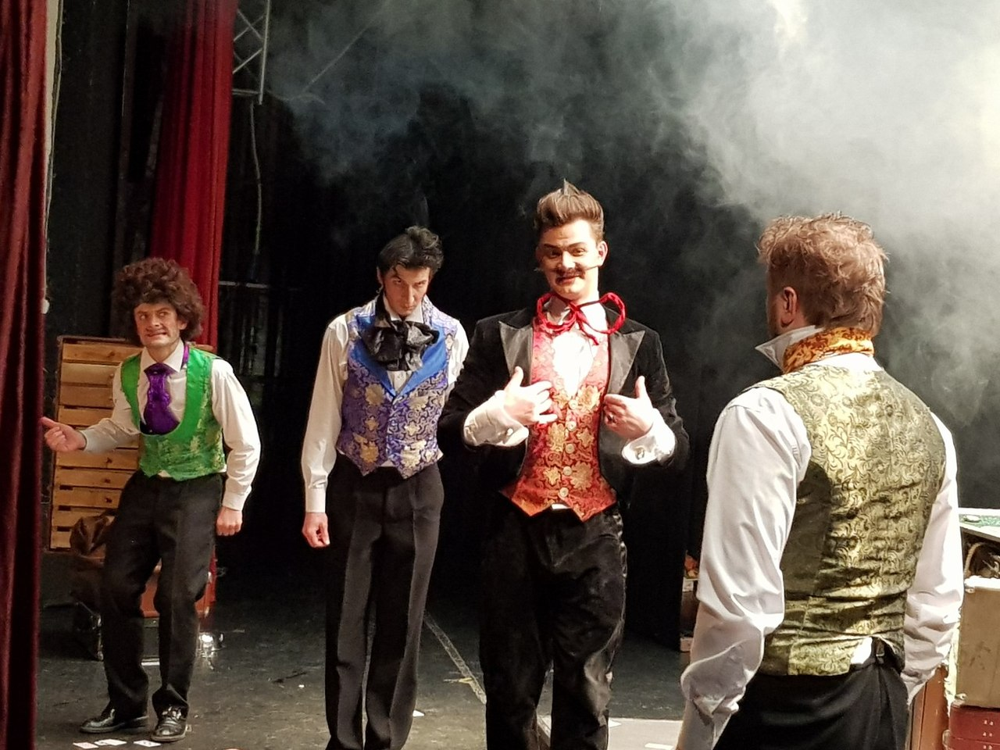
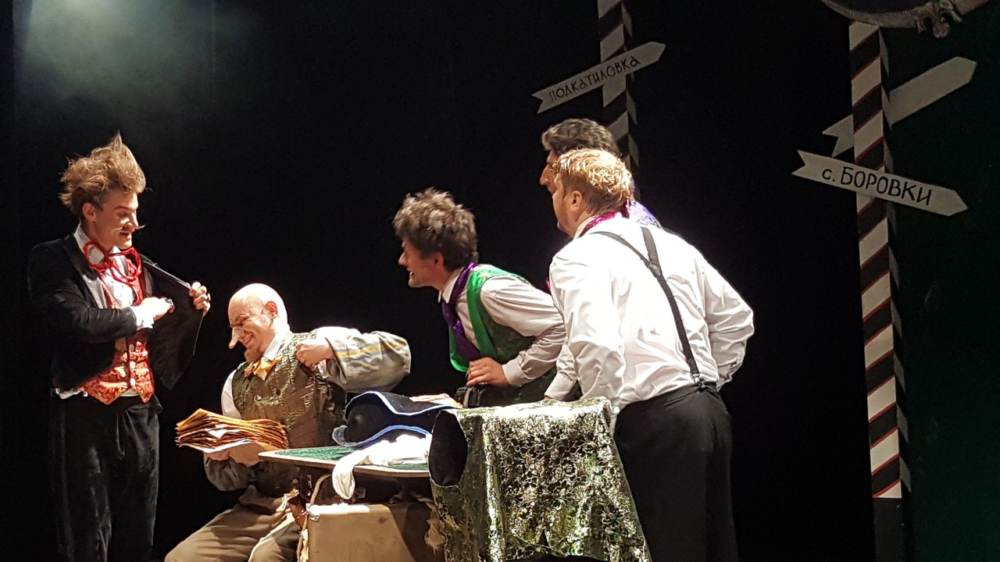

Игроки

Действующие лица (9 чел):
Ихарев;
Пётр Петрович Швохнев;
Полковник Кругель;
Степан Иванович Утешительный;
Михаил Александрович Глов;
Александр Михалый Глов, подставной сын Глова;
Псой Стахич Замухрышкин, подставной чиновник из приказа;
Гаврюшка, слуга Ихарева;
Алексей, трактирный слуга;цыгане (4-5)
Список костюмов
- Ихарев
- белая рубашка
- черные брюки -2пары
- подтяжки -1
- жилет - 2 шт
- шейный платок -2шт,брошь
- фрак
- туфли черные
- Швохнев
- белая рубашка
- черные брюки
- жилет зеленый
- бант сиреневый
- туфли черные
- парик
- Кругель
- белая рубашка
- черные брюки
- жилет фиолетовый
- бант черный
- носовой белый платок
- (туфли черные)
- Утешительный
- белая рубашка
- запонки
- черный костюм
- жилет красный
- бант красный проволочный -3шт
- ботинки черные
- Глов старший
- белая рубашка
- брюки галифе черные
- кушак черный
- фрак синий
- бант оранжевый
- шляпа треуголка
- сапоги черные
- Глов младший
- рубашка белая -2шт
- брюки черные
- жилет голубой
- бант золотой
- желтые банты для обуви
- туфли черные
- Замухрышкин

- белая рубашка
- жилет зеленый
- брюки полосатые,шнурок
- нарукавники полосатые
- бант коричневый
- туфли коричневые
- Гаврюшка
- льняная рубаха
- шаровары зеленые,шнурок
- жилет коричневый длинный
- картуз
- бант сиреневый
- сапоги
- Алексей
- белая рубашка
- брюки клетчатые
- жилет коричневый
- две ленты бордо для банта
- туфли лаковые
- канделябр со свечами,фартук клетчатый,скатерть белая круглая,полотенца белые 2 шт,бюстгалтер белый,бритва опасная,помазок,зеркало,флакон с пульверизатором,пена д/бритья,чашка нержавейка,порционные тарелки с зеленой полосой 4шт,ножи и вилки 4 шт,большой разделочный нож,салатная ложка,большое блюдо с бутербродами(хлеб,колбаса,сыр),сосиски бут,поросенок на блюде,поднос 2шт,графин с "самогоном", рюмки 2 шт, бутыль большая с "самогоном", "шампанское", 4 фужера,беломор,спички
- Цыган
- рубаха оранжевая
- жилет цветной
- брюки черные
- шляпа черная
- Цыгане
- цветные наряды цыганок 3-4
- имитация ребенка